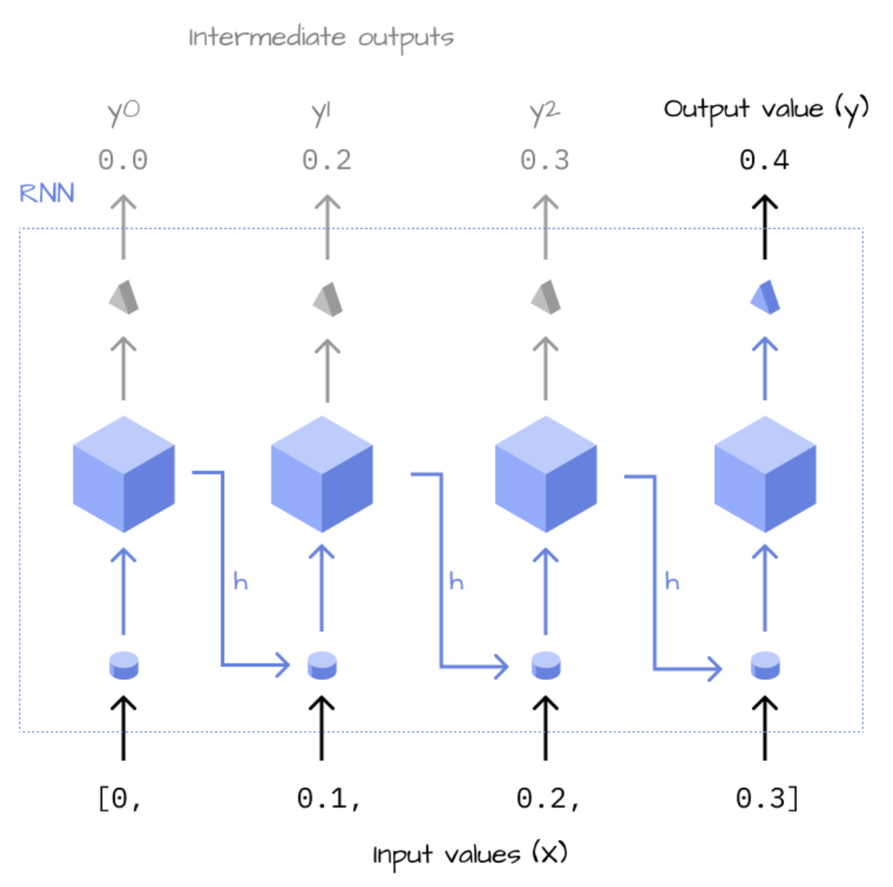
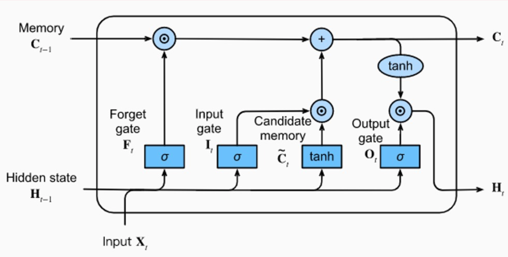

import torch
import math
import torch.nn.functional as F
import torch.nn as nnPaper Summary: Attention is All You Need
paper summary
deep learning
LLM
A summary of research introducing the Transformer architecture and a code walkthrough for the Encoder and Decoder.
Background
In this notebook I’ll provide a summary of the Attention is All You Need paper. I’ll also heavily reference the fantastic code walkthroughs by CodeEmporium on YouTube for the Encoder and Decoder.
Other resources that were critical to my understanding of this paper:
- Benjamin Warner’s two-part blog post on creating a transformer from scratch (Attention mechanism and the rest of the transformer).
- Introduction to RNNs by Max Weichart.
- The Illustrated Transformer and The Illustrated GPT-2 by Jay Alammar.
- Understanding LSTM Networks by Christopher Olah.
- Understanding Encoder and Decoder LLMs by Sebastian Raschka.
- What are Word and Sentence Embeddings? by Cohere.
- Illustrated Guide to Transformers Neural Network: A step by step explanation by the AI Hacker.
Sequence Modeling Review
Before getting into the details of the Transformer architecture introduced in this paper, I’ll do a short overview of the main type of architecture (RNN) that the Transformer is improving upon. Most importantly, the Transformer is improves upon the dependencies between tokens in long sequences.
Recurrent Neural Nets (RNNs)
In Max’s post he provides the following illustration of RNNs, where the inputs are recursively passed through the hidden laye and at each iteration, the hidden layer state from the previous step is incorporated in the current state’s calculation. In this way, RNNs store information about the previous step in the next step.
The forward pass in Max’s post is given as:
def forward(self, X, i=0, h=0):
l1 = lin(X[i], self.w1)
h = relu(l1 + h*self.w2)
if (i+1 != len(X)):
return self.foward(X, i+1, h)The hidden state from the previous iteration h is multiplied by a trainable weight w2, added to the output of the linear function lin(X[i], self.w1) and passed through a non-linearity (in this case a ReLU) to get the current state h. Until the end of the input sequence is reached, the forward pass continues to recursively incorporate previous state information into the current input’s calculation.

The study of RNNs highlights how, in the basic RNN architecture, as the time instants considered increase, the product chain determined by backpropagation through time tends to zero or tends to extremely large values. In the first case, we have a vanishing gradient, in the second case an exploding gradient. (source).
Long Short-Term Memory (LSTM)
To combat this training instability for long sequences, the LSTM network is used. This is an RNN architecutre capable of learning long-term dependencies with long-term memory (cell state C in the diagram) and short-term memory (hidden state H in the diagram).

(source).
The LSTM uses past information (H) and new information (X) to update long-term memory (C). It then uses C to update H, and the cycle continues for the next input sequence.
In the diagram below, at the bottom left, the Hidden state from the previous step, \(\textbf{H}_{t-1}\) is combined with the new Input of the current step \(\textbf{X}_t\) and goes into the different gates for different purposes (Forget gate, Input gate, Candidate memory, and Output gate).
The \(+\) operator is the combining of long-term memory from the previous step \(\textbf{C}_{t-1}\) with the output of the Candidate memory \(\tilde{C_t}\).
Finally, the Output gate \(\textbf{O}_t\) combines the long-term memory \(\textbf{C}_t\) with the sigmoid output of \(\textbf{H}_{t-1}\) and \(\textbf{X}_t\) to create the hidden state for the current step \(\textbf{H}_t\).
The hidden state and long-term memory are then used in the next input step.
Transformer Architecture Overview
- Does not use recurrence.
- Relies entirely on the attention mechanism for global dependencies.
- Allows for parallelization (as opposed to sequential processing).
The Transformer achieves better BLUE scores than previous state-of-the-art (SOTA) models on the English-to-German and English-to-French machine translation tests at a fraction of the training cost.
Here are the current English-to-German SOTA results:
And the current English-to-French SOTA results:
Here is the paper’s beautiful diagram (with my annotations) of an Encoder-Decoder Transformer architecture:
The inputs (numericalized tokens) pass through the Input Embedding which projects these numbers into a much larger number of dimensions, dimensions in which different information about the tokens will be learned through training. In this paper they use a dimension of 512 (referred to as the “hidden dimension”). This value is a hyperparameter and different architectures use different numbers of hidden dimensions.
The output of this Embedding is passed through a Positional Encoding step which quantitatively stores information about the position of each token. Since Transformers don’t explicitly express position as sequence modeling does, we have to implicitly express position in this way.
The inputs, after going through the Embedding and Positional Encoding, now enter the Encoder which is a type of Transformer Block containing Mult-Head Attention, Add & Norm layers and a Feed Forward Network.
The outputs follow a similar path, first through an Output Embedding, then Positional Encoding, and then a Decoder which is another type of Transform Block. A Transformer can be Encoder-only, Decoder-only or Encoder-Decoder. In this paper they focus on Encoder-Decoder Transformers, where information learned in the Encoder is used in the Decoder in a process call cross-attention that we’ll look into shortly. In this paper, they have 6 Encoder blocks and 6 Decoder blocks. The number of blocks can be varied (i.e. it’s a hyperparameter).
The outputs of the Decoder pass through a final linear layer and then a softmax layer (transformed into 0 to 1.0 probabilities).
The encoder receives the input text that is to be translated, and the decoder generates the translated text. (source)
Fundamentally, both encoder- and decoder-style architectures use the same self-attention layers to enocde word tokens. However, the main difference is that encoders are designed to learn embeddings that can be used for various predictive modeling tasks such as classification. In contrast, decoders are designed to generate new texts, for example, answering user queries. (source)
The encoder part in the original transformer…is responsible for understanding and extracting the relevant information from the input text. It then outputs a continuous representation (embedding) of the input text that is passed to the decoder. Finally, the decoder generates the translated text (target language) based on the continuous representation received from the encoder. (source)
From Benjamin Warner’s post:
If we use the first sentence in this post and assume each word is a token:
Transformers are everywhere.
then the “Transformers” token would predict “are”, and “are” would predict “everywhere.”
To create our inputs (line 1) we’ll drop the last token and to create the labels (line 2) we’ll remove the first token:
- Transformers are
- are everywhere
Code Overview: Encoder
In this section I’ll walk through some of the code presented in the YouTube video by CodeEmporium.
I’ll start by defining some constants that I’ll use throughout. d_model is the hidden dimension hyperparameter.
batch_size = 64
max_sequence_length = 200
d_model = 512
vocab_size = 10_000
context_size = 200In a real scenarios, the inputs (tokens) would be numericalized tokens corresponding to a real natural language dataset. In this example, I’ll use random integers.
tokens = torch.randint(0, vocab_size, (batch_size, max_sequence_length))
tokens.shape, tokens.min(), tokens.max()(torch.Size([64, 200]), tensor(0), tensor(9999))I have 64 batches of 200 tokens each, where each token is an integer from 0 to 10_000.
Input Embedding
The input Embedding is a PyTorch object which takes an integer and returns a tensor of a given dimension (in this case 512).
vocab_embed = nn.Embedding(vocab_size, d_model)
vocab_embedEmbedding(10000, 512)When I pass a tensor integer, I get in return a 512 dimension tensor filled with float values.
vocab_embed(torch.tensor([4])).shapetorch.Size([1, 512])vocab_embed(torch.tensor([4]))[0][:5]tensor([-0.0996, 1.2077, -0.8627, -0.4755, 0.5210], grad_fn=<SliceBackward0>)When I pass my batched tokens to the Embedding, I get back a batched set of 512 float values:
token_embs = vocab_embed(tokens)
token_embs.shapetorch.Size([64, 200, 512])In other words, my tokens, which are integers that represent natural language, are now projected into 512 dimensions, dimensions in which the Embedding will learn something about the tokens and therefore about language.
Positional Encodings
The formula used in the paper for positional encodings are as follows (sine for even i values and cosine for odd):
\[PE_{(pos, 2i)} = \sin(\text{pos} / 10000^{2i/d_{model}})\] \[PE_{(pos, 2i+1)} = \cos(\text{pos} / 10000^{2i/d_{model}})\]
I’ll reuse the code provided in Benjamin’s blog post:
# create the positional encoding tensor of shape
# maximum sequence length (MS) by embedding dimension (C)
pe = torch.zeros(context_size, d_model, dtype=torch.float)
# pre-populate the position and the div_terms
position = torch.arange(context_size).unsqueeze(1)
div_term = torch.exp(
torch.arange(0, d_model, 2) * (-math.log(10000) / d_model)
)
# even positional encodings use sine, odd cosine
pe[:, 0::2] = torch.sin(position * div_term)
pe[:, 1::2] = torch.cos(position * div_term)I want to make sure I understand the div_term since I didn’t understand it at first glance:
torch.exp(torch.arange(0, d_model, 2) * (-math.log(10000) / d_model))Translating that to math gives us:
\[\exp\big(-2i * \ln(10000) / d_{model}\big)\]
Using the negative exponent rule: \(\exp(-a) = \frac{1}{\exp(a)}\):
\[\exp\big({\frac{-2i * ln(10000)}{d_{model}}}\big) = \frac{1}{\exp \big( \frac{2i * ln(10000)}{d_{model}}\big)}\]
Using the power of a power rule: \(\exp(ab) = \exp(a)^b\):
\[\frac{1}{\exp \big( \frac{2i * ln(10000)}{d_{model}}\big)} = \frac{1}{\exp\big(\ln(10000)\big)^{2i/d_{model}}}\]
The term \(\exp(\ln(10000))\) equals just \(10000\):
\[\frac{1}{\exp\big(\ln(10000)\big)^{2i/d_{model}}} = \frac{1}{10000^{2i/d_{model}}}\]
Which is the same as the divison term in the paper’s math formula.
pe[0][:5], pe[1][:5](tensor([0., 1., 0., 1., 0.]),
tensor([0.8415, 0.5403, 0.8219, 0.5697, 0.8020]))I’ll add the positional encoding to the embedded tokens—note that here PyTorch uses broadcasting to “copy” pe over each of the 64 batches.
pe.shape, token_embs.shape(torch.Size([200, 512]), torch.Size([64, 200, 512]))token_embs = token_embs + pe
token_embs.shapetorch.Size([64, 200, 512])In CodeEmporium’s implementation, at this point token_embs is passed through a Dropout layer, so I’ll do the same:
embed_drop = nn.Dropout(0.1)
x = embed_drop(token_embs)
x.shapetorch.Size([64, 200, 512])Attention Mechanism
At this point, the inputs are now ready to enter the attention mechanism. Before we do that, I’ll save the current state of the inputs in a variable so that later on I can add it to the output of the attention mechanism.
residual_x = xThe particular flavor of attention used at this point is Scaled Dot-Product Attention across multiple heads. Here’s the steps taken in Scaled Dot-Product Attention:
Where \(Q\) (query), \(K\) (key) and \(V\) (value) are matrices (initially of random numbers) that consist of learned weights during training.
The first step is the matrix multiplication of \(Q\) and \(K^T\), followed by scaling that result by the square root of the dimension \(d_k\). The encoder doesn’t have a mask (the decoder does). Finally, the softmax is taken of that scaled dot product and its output matrix multiplied with \(V\).
Here’s a conceptual understanding of attention from the Illustrated GPT-2:
And here’s a visualization of attention values between tokens:
Before we get into the code for attention, here is a visualization of Mult-Head Attention, where the Scaled Dot-Product Attention occurs simultaneously across multiple heads, displaying the parallelization capability of Transformers:
We’ll go bottom-up in the diagram:
- Create Q, K, V matrices. Split them across \(h\) heads.
- Perform Scaled Dot-Product Attention.
- Concatenate them from \(h\) heads.
- Pass them through a final Linear layer.
Both Benjamin and CodeEmporium created a single Linear layer and then split them into \(Q\), \(K\) and \(V\), so I’ll do the same. A reminder (to myself and the reader) that these are weight matrices that will be used eventually to multiply by the inputs.
qkv_layer = nn.Linear(d_model, 3 * d_model)
qkv_layerLinear(in_features=512, out_features=1536, bias=True)Passing the inputs through this linear layer gives us the matrices:
qkv = qkv_layer(x)
qkv.shapetorch.Size([64, 200, 1536])Next, we project the \(Q\), \(K\) and \(V\) combined matrix across 8 heads
num_heads = 8
head_dim = d_model // num_heads
qkv = qkv.reshape(batch_size, max_sequence_length, num_heads, 3 * head_dim)
qkv.shapetorch.Size([64, 200, 8, 192])This splits the 1536 values into 8 sets of 192.
In CodeEmporium’s code, they swap the middle two dimensions so it’s broadcastable with tensors later on
qkv = qkv.permute(0, 2, 1, 3)
qkv.shapetorch.Size([64, 8, 200, 192])We then split qkv into three separate matrices, each with 200 x 64 values on each of the 8 heads:
q, k, v = qkv.chunk(3, dim=-1)
q.shape, k.shape, v.shape(torch.Size([64, 8, 200, 64]),
torch.Size([64, 8, 200, 64]),
torch.Size([64, 8, 200, 64]))Finally, we can create the attention matrix. First we perform the scaled dot-product between \(Q\) and \(K\)
d_k = torch.tensor(q.shape[-1]) # 64
scaled_dot_product = torch.matmul(q, k.transpose(-1, -2)) / torch.sqrt(d_k)
scaled_dot_product.shapetorch.Size([64, 8, 200, 200])Note that when \(K\) is transposed, the last two dimensions are swapped to allow for correct matrix multiplication dimension order.
q.shape, k.shape, k.transpose(-1, -2).shape(torch.Size([64, 8, 200, 64]),
torch.Size([64, 8, 200, 64]),
torch.Size([64, 8, 64, 200]))The dimension of 64 matches between \(Q\) and \(K^T\) after .transpose(-1 ,-2) swaps the last two dimensions of \(K\).
One thing I noticed in both Benjamin and CodeEmporium’s code is that they define attention as the output of passing the scaled dot-product through softmax. This is the “attention matrix” I’ve seen referred to in places. The paper defines attention as the product of the matrix multiplication between that softmax output and the \(V\) (values) matrix.
attention = F.softmax(scaled_dot_product, dim=-1)attention.shapetorch.Size([64, 8, 200, 200])dim is set to -1 so that the values in the last dimension are between 0 and 1.
attention[0,0,0].shape, attention[0,0,0].sum()(torch.Size([200]), tensor(1., grad_fn=<SumBackward0>))attention’s final dimensions are of size 200 x 200, representing weights corresponding to the relationship between each of the 200 tokens.
v = torch.matmul(attention, v)
v.shapetorch.Size([64, 8, 200, 64])From Benjamin’s post:
Next we matrix multiply the Attention weights with our value matrix \(V\) which applies the Attention weights to our propagating token embeddings
x.shapetorch.Size([64, 200, 512])x = attention @ v
x.shapetorch.Size([64, 8, 200, 64])Next, we have to concatenate across the 8 heads:
x = x.reshape(batch_size, max_sequence_length, num_heads * head_dim)
x.shapetorch.Size([64, 200, 512])Now the 64 dimensions across 8 heads are concatenated to get back to the embedding size of 512. We still maintain the 64 batches and 200 sequence length.
The last step before the attention mechanism is fully complete is to pass these values through a linear layer:
linear_layer = nn.Linear(d_model, d_model)
x = linear_layer(x)
x.shapetorch.Size([64, 200, 512])The linear layer maintains the dimension (512 in, 512 out).
x then passes through a Dropout layer and a Layer Normalization layer. Note that residual_x is added to x before the sum is passed through the Layer Normalization.
I won’t walk through the details of Layer Normalization, but CodeEmporium provides the following code that I’ll highlight the following few lines from:
mean = x.mean(dim=[-1], keepdim=True)
var = ((x - mean) ** 2).mean(dim=[-1], keepdim=True)
std = (var + 1e-5).sqrt()
y = (x - mean) / std
x = gamma * y + betaWhere gamma and beta are learnable nn.Parameter weights. Note that the values are normalized (resulting in y) and then normalization occurs across all samples (gamma * y + beta).
x is stored as residual_x to add on later, and then x goes through a Feed Forward Network (a non-linearity, in this case a GELU, and a Dropout layer sandwiched between two linear layers), and then through another Dropout layer and Layer Normalization (where residual_x is added to x).
Code Overview: Decoder
There are some similarities and some differences between the Encoder and the Decoder. Note that in CodeEmporium’s implementation, the Decoder contains Self Attention and Encoder-Decoder Attention (also called Cross Attention in Benjamin’s post).
The first main difference is that what goes into the Decoder are the outputs (the inputs shifted by one token).
In the Decoder, attention is masked. Only the current token and previous output tokens are “visible” to the model. Future tokens are masked. How does this masking take place? Here’s CodeEmporium’s code:
Start by creating a 200 x 200 tensor full of negative infinity (negative infinity is used so that when you take the softmax of it, it goes to 0)
mask = torch.full([max_sequence_length, max_sequence_length], float('-inf'))
masktensor([[-inf, -inf, -inf, ..., -inf, -inf, -inf],
[-inf, -inf, -inf, ..., -inf, -inf, -inf],
[-inf, -inf, -inf, ..., -inf, -inf, -inf],
...,
[-inf, -inf, -inf, ..., -inf, -inf, -inf],
[-inf, -inf, -inf, ..., -inf, -inf, -inf],
[-inf, -inf, -inf, ..., -inf, -inf, -inf]])Keep the upper triangle as -inf and make everything else 0 with torch.triu:
mask = torch.triu(mask, diagonal=1)
masktensor([[0., -inf, -inf, ..., -inf, -inf, -inf],
[0., 0., -inf, ..., -inf, -inf, -inf],
[0., 0., 0., ..., -inf, -inf, -inf],
...,
[0., 0., 0., ..., 0., -inf, -inf],
[0., 0., 0., ..., 0., 0., -inf],
[0., 0., 0., ..., 0., 0., 0.]])Now, when the mask is added to the scaled dot-product, the upper triangle will go to -inf (since anything plus -inf is -inf). Taking the softmax of that to get the attention matrix will result in a matrix with an upper triangle of zeros:
scaled_dot_product = scaled_dot_product + mask
scaled_dot_product[0][0]tensor([[-9.5668e-01, -inf, -inf, ..., -inf,
-inf, -inf],
[-3.3439e-01, -1.0772e+00, -inf, ..., -inf,
-inf, -inf],
[-2.8391e-01, 2.7374e-02, 7.6844e-01, ..., -inf,
-inf, -inf],
...,
[ 3.8771e-04, -2.7279e-01, 3.2622e-01, ..., -1.5672e-01,
-inf, -inf],
[ 9.1237e-01, 9.8978e-01, 8.4105e-02, ..., 7.8569e-01,
-1.8654e-03, -inf],
[-8.3207e-01, -1.6773e-01, -8.6295e-01, ..., -3.1891e-01,
-7.7460e-01, -8.4962e-01]], grad_fn=<SelectBackward0>)F.softmax(scaled_dot_product, dim=-1)[0][0]tensor([[1.0000, 0.0000, 0.0000, ..., 0.0000, 0.0000, 0.0000],
[0.6776, 0.3224, 0.0000, ..., 0.0000, 0.0000, 0.0000],
[0.1912, 0.2610, 0.5477, ..., 0.0000, 0.0000, 0.0000],
...,
[0.0049, 0.0037, 0.0068, ..., 0.0042, 0.0000, 0.0000],
[0.0073, 0.0079, 0.0032, ..., 0.0065, 0.0029, 0.0000],
[0.0031, 0.0060, 0.0030, ..., 0.0052, 0.0033, 0.0030]],
grad_fn=<SelectBackward0>)Cross Attention works differently—the “Cross” in Cross Attention is talking about the relationship between the Encoder and Decoder. Specifically, the \(K\) and \(V\) weights are applied to the Encoder outputs and the \(Q\) weights are applied to the Decoder outputs. The rest of the process (scaled dot product, softmax, concatenation, linear layer) are the same as before (with the addition of adding the mask to the scaled dot product).
After passing the through Cross Attention, the outputs go through Dropout and Layer Normalization, then a Feed Forward Network, and then through another Dropout and Layer Normalization step. The inputs to the Layer Normalization call are the residual_x plus x, which is said to stabilize the training process.
Finally, the outputs go through a final linear layer which projects the outputs to the vocabulary size and then a final softmax call which converts those logits to probabilities per vocabulary token (in other words, answering the question: what are the probabilities that the next token will be each token in the vocabulary?)
There are a lot of details that I have left out of this post for brevity so to get the full Transformers code experience, see Benjamin’s commented-transformers repository, and CodeEmporium’s Encoder/Decoder notebooks.
Final Thoughts
I was pleasantly surprised at how understandable the code is for the Transformer architecture. The paper does a great job of helping the reader visualizing the concepts in play, especially the process involved in calculating scaled dot-product attention across multiple heads. The number excellent resources available that I’ve referenced throughout this blog post are also essential to understanding the code and concepts involved.
On a personal note, I recall going to a presentation on this paper a few years ago and leaving feeling so incredibly lost, and that maybe I wouldn’t understand how this critical architecture actually works—like I had hit a wall of complexity that I wouldn’t be able to overcome. Reading this paper, understanding it, presenting on it and writing this blog post felt like redemption for me. I obviously couldn’t have done it without the excellent resources I’ve linked above.
As always, I hope you enjoyed this paper summary!